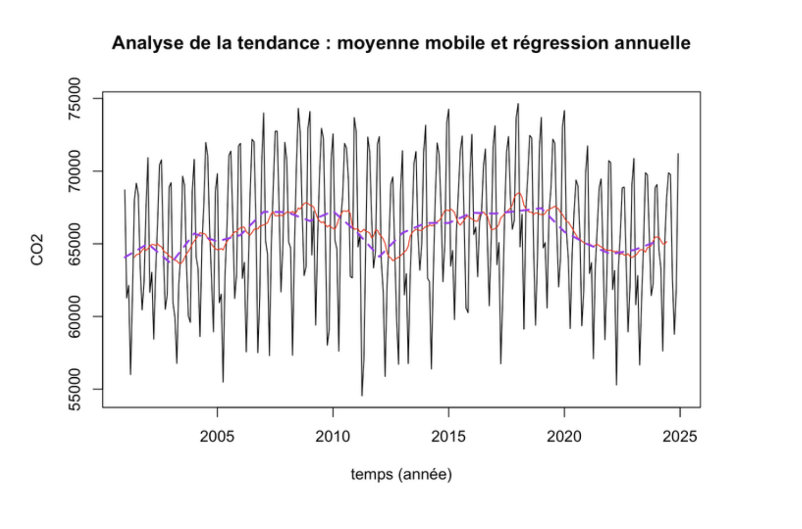

Prévision de la Production Nucléaire
Analyse de séries temporelles et modélisation prédictive de la production énergétique aux USA (2001-2025).

Contexte
Réalisé dans le cadre du module "Description et Prévision de séries temporelles", ce projet portait sur l'analyse des données de l'EIA (Administration de l'information sur l'énergie). L'objectif était de modéliser l'évolution mensuelle de la production d'énergie nucléaire aux États-Unis sur 24 ans (2001-2024) pour prédire la production de l'année 2025.
Méthodologie
- Exploration : Analyse de la tendance et de la saisonnalité (décomposition additive).
- Comparaison de 3 modèles :
- Lissage Exponentiel (Holt-Winters).
- Modélisation Stochastique (SARMA / Box-Jenkins).
- Approche Déterministe (Régression polynomiale + Saisonnalité).
- Évaluation : Test des modèles sur l'année 2024 (calcul de l'EQM).
Technologies
- Langage R & RStudio
- Bibliothèques : ggplot2 (visualisation), forecast, tseries
- Manipulation de données temporelles (séries temporelles)
Résultats
L'analyse a révélé une forte saisonnalité dans la production nucléaire. La comparaison des erreurs (MSE) a démontré que le modèle SARMA était le plus performant pour capturer les variations récentes, avec une erreur moyenne d'environ 1 440 MW/h, surpassant les approches déterministes et Holt-Winters.